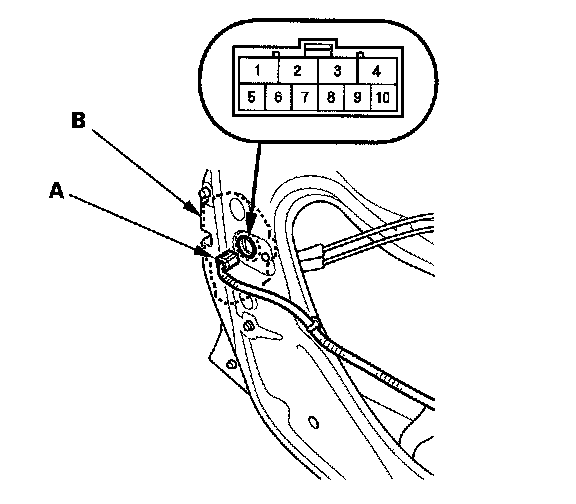
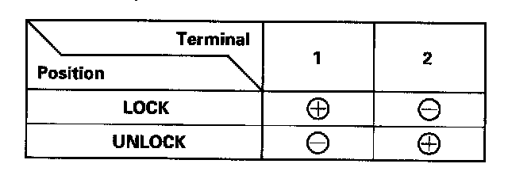
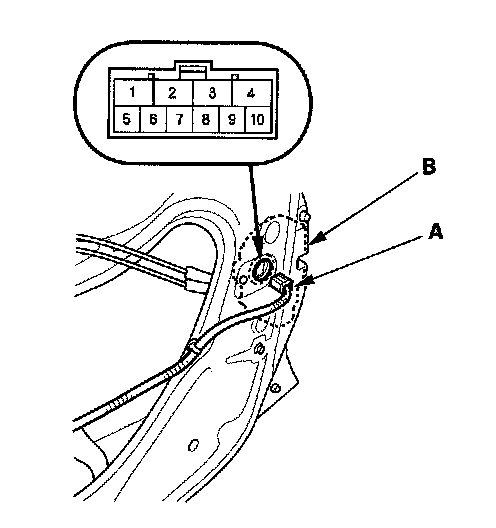
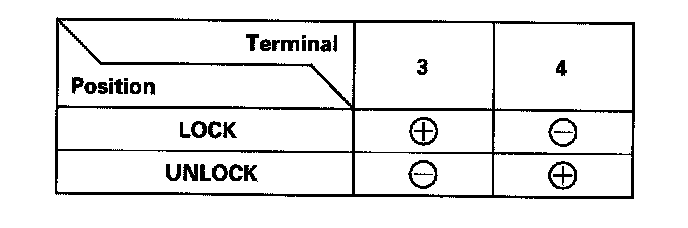

Door Lock Actuator Test
Door Lock Actuator TestDriver's Door and Left Rear Door
1. Remove the door panel.
- 2-door.
- 4-door.

2. Disconnect the 10P connector (A) from the actuator (B).
NOTE: The illustration shows the driver's door.

3. Check actuator operation by connecting power and ground according to the table. To prevent damage to the actuator, apply battery voltage only momentarily.
4. If the actuator does not operate as specified, replace it.
Front Passenger's Door and Right Rear Door
1. Remove the door panel.
- 2-door.
- 4-door.

2. Disconnect the 10P connector (A) from the actuator (B).
NOTE: The illustration shows the front passenger's door.

3. Check actuator operation by connecting power and ground according to the table. To prevent damage to the actuator, apply battery voltage only momentarily.
4. If the actuator does not operate as specified, replace it.